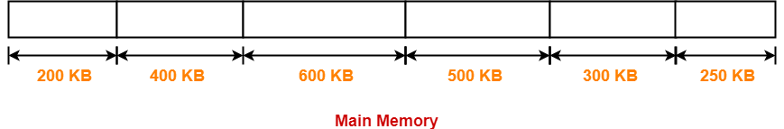

# 简述
首次适应算法（first-fit） ：从空闲分区表的第一个表目起查找该表，把最先能够满足要求的空闲区分配给作业，这种方法的目的在于减少查找时间。
最佳适应算法（best-fit） ：从全部空闲区中找出能满足作业要求的，且大小最小的空闲分区，这种方法能使碎片尽量小。
最差适应算法（worst-fit） ：它从全部空闲区中找出能满足作业要求的、且大小最大的空闲分区，从而使链表中的节点大小趋于均匀。
# 例子
# 文字描述
下面先来看一个实例：
Given five memory partitions of 100 KB, 500 KB, 200 KB, 300 KB, and 600 KB (in order), how would each of the first-fit, best-fit, and worst-fit algorithms place processes of 212 KB, 417 KB, 112 KB, and 426 KB (in order)? Which algorithm makes the most efficient use of memory?
1、首次适应算法：
- 为 212k 分配空间：
依次找寻，找到第一个大于 212k 的空闲区；
找到第二个空闲区 500k > 212k，分配给 212k，剩余 288k 空闲区；
- 为 417k 分配空间：
依次找寻，找到第一个大于 417k 的空闲区；
找到第五个空闲区 600k > 417k，分配给 417k，剩余 183k 空闲区
- 为 112k 分配空间：
依次找寻，找到第一个大于 112k 的空闲区；
找到第二个空闲区 288k > 112k，分配给 112k，剩余 176k 空闲区
- 为 426k 分配空间：
依次找寻，找到第一个大于 426k 的空闲区；
未找到，此作业将等待释放空间
2、最佳适应算法：
- 为 212k 分配空间：
找到第一个跟 212k 大小最接近的空闲区
找到第四个空闲区 300k > 212k，剩余 88k 空闲区
- 为 417k 分配空间：
找到第一个跟 417k 大小最接近的空闲区
找到第二个空闲区 500k > 417k，剩余 83k 空闲区
- 为 112k 分配空间：
找到第一个跟 112k 大小最接近的空闲区
找到第三个空闲区 200k > 112k，剩余 88k 空闲区
- 为 426k 分配空间：
找到第一个跟 426k 大小最接近的空闲区
找到第五个空闲区 600k > 426k，剩余 174k 空闲区
3、最差适应算法：
- 为 212k 分配空间：
找到第一个大小最大的空闲区
找到第五个空闲区 600k > 212k，剩余 388k 空闲区
- 为 417k 分配空间：
找到第一个大小最大的空闲区
找到第二个空闲区 500k > 417k，剩余 83k 空闲区
- 为 112k 分配空间：
找到第一个大小最大的空闲区
找到第三个空闲区 388k > 112k，剩余 276k 空闲区
- 为 426k 分配空间：
找到第一个大小最大的空闲区
达到大小最大的空闲区 300k < 426k，所以不分配
Answer
| Free partition | 100 | 500 | 200 | 300 | 600 | Not satisfied |
|---|---|---|---|---|---|---|
| First-fit | 212,112 | 417 | 426 | |||
| Best-fit | 417 | 112 | 212 | 426 | ||
| Worst-fit | 417 | 212,112 | 426 |
# 动图分析
文字图表看不懂，那接着配合动图来了解：
这次我们考虑六个大小为 200 KB，400 KB，600 KB，500 KB，300 KB 和 250 KB 的内存分区；这些分区需要按此顺序分配给四个进程，大小分别为 357 KB，210 KB，468 KB 和 491 KB。

依次执行：
- 首次适应算法
- 最佳适应算法
- 最差适应算法
1、首次适应算法：

- 进程 P4 无法分配内存，这是因为没有大于或等于处理 P4 的大小的分区可用。
2、最佳适应算法：
3、最差适应算法：
- 无法为进程 P3 和进程 P4 分配内存，这是因为没有大于或等于处理 P3 和处理 P4 的大小的分区可用。
# 参考
https://blog.csdn.net/u011070169/article/details/53177987
https://www.gatevidyalay.com/contiguous-memory-allocation-practice-problems/